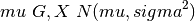

calibration¶
Calibration based on empirical Bayes estimation [Efron2014].
This calibration procedure can be useful when the number of trees in the random forest is small.
calibrateEB(variances, sigma2) |
Calibrate noisy variance estimates with empirical Bayes. |
fftconvolve(in1, in2[, mode]) |
Convolve two N-dimensional arrays using FFT. |
gbayes(x0, g_est, sigma) |
Estimate Bayes posterior with Gaussian noise [Efron2014]. |
gfit(X, sigma[, p, nbin, unif_fraction]) |
Fit empirical Bayes prior in the hierarchical model [Efron2014]. |
minimize(fun, x0[, args, method, jac, hess, …]) |
Minimization of scalar function of one or more variables. |
calibrateEB¶
fftconvolve¶
-
forestci.calibration.fftconvolve(in1, in2, mode='full')[source]¶ Convolve two N-dimensional arrays using FFT.
Convolve in1 and in2 using the fast Fourier transform method, with the output size determined by the mode argument.
This is generally much faster than convolve for large arrays (n > ~500), but can be slower when only a few output values are needed, and can only output float arrays (int or object array inputs will be cast to float).
As of v0.19, convolve automatically chooses this method or the direct method based on an estimation of which is faster.
Parameters: in1 : array_like
First input.
in2 : array_like
Second input. Should have the same number of dimensions as in1. If operating in ‘valid’ mode, either in1 or in2 must be at least as large as the other in every dimension.
mode : str {‘full’, ‘valid’, ‘same’}, optional
A string indicating the size of the output:
fullThe output is the full discrete linear convolution of the inputs. (Default)
validThe output consists only of those elements that do not rely on the zero-padding.
sameThe output is the same size as in1, centered with respect to the ‘full’ output.
Returns: out : array
An N-dimensional array containing a subset of the discrete linear convolution of in1 with in2.
Examples
Autocorrelation of white noise is an impulse.
>>> from scipy import signal >>> sig = np.random.randn(1000) >>> autocorr = signal.fftconvolve(sig, sig[::-1], mode='full')
>>> import matplotlib.pyplot as plt >>> fig, (ax_orig, ax_mag) = plt.subplots(2, 1) >>> ax_orig.plot(sig) >>> ax_orig.set_title('White noise') >>> ax_mag.plot(np.arange(-len(sig)+1,len(sig)), autocorr) >>> ax_mag.set_title('Autocorrelation') >>> fig.tight_layout() >>> fig.show()
Gaussian blur implemented using FFT convolution. Notice the dark borders around the image, due to the zero-padding beyond its boundaries. The convolve2d function allows for other types of image boundaries, but is far slower.
>>> from scipy import misc >>> face = misc.face(gray=True) >>> kernel = np.outer(signal.gaussian(70, 8), signal.gaussian(70, 8)) >>> blurred = signal.fftconvolve(face, kernel, mode='same')
>>> fig, (ax_orig, ax_kernel, ax_blurred) = plt.subplots(3, 1, ... figsize=(6, 15)) >>> ax_orig.imshow(face, cmap='gray') >>> ax_orig.set_title('Original') >>> ax_orig.set_axis_off() >>> ax_kernel.imshow(kernel, cmap='gray') >>> ax_kernel.set_title('Gaussian kernel') >>> ax_kernel.set_axis_off() >>> ax_blurred.imshow(blurred, cmap='gray') >>> ax_blurred.set_title('Blurred') >>> ax_blurred.set_axis_off() >>> fig.show()
gbayes¶
gfit¶
-
forestci.calibration.gfit(X, sigma, p=5, nbin=200, unif_fraction=0.1)[source]¶ Fit empirical Bayes prior in the hierarchical model [Efron2014].

Parameters: X: ndarray
A 1D array of observations.
sigma: float
Noise estimate on X.
p: int
Number of parameters used to fit G. Default: 5
nbin: int
Number of bins used for discrete approximation. Default: 200
unif_fraction: float
Fraction of G modeled as “slab”. Default: 0.1
Returns: An array of the posterior density estimate g.
minimize¶
-
forestci.calibration.minimize(fun, x0, args=(), method=None, jac=None, hess=None, hessp=None, bounds=None, constraints=(), tol=None, callback=None, options=None)[source]¶ Minimization of scalar function of one or more variables.
In general, the optimization problems are of the form:
minimize f(x) subject to g_i(x) >= 0, i = 1,...,m h_j(x) = 0, j = 1,...,p
where x is a vector of one or more variables.
g_i(x)are the inequality constraints.h_j(x)are the equality constrains.Optionally, the lower and upper bounds for each element in x can also be specified using the bounds argument.
Parameters: fun : callable
The objective function to be minimized. Must be in the form
f(x, *args). The optimizing argument,x, is a 1-D array of points, andargsis a tuple of any additional fixed parameters needed to completely specify the function.x0 : ndarray
Initial guess.
len(x0)is the dimensionality of the minimization problem.args : tuple, optional
Extra arguments passed to the objective function and its derivatives (Jacobian, Hessian).
method : str or callable, optional
Type of solver. Should be one of
- ‘Nelder-Mead’ (see here)
- ‘Powell’ (see here)
- ‘CG’ (see here)
- ‘BFGS’ (see here)
- ‘Newton-CG’ (see here)
- ‘L-BFGS-B’ (see here)
- ‘TNC’ (see here)
- ‘COBYLA’ (see here)
- ‘SLSQP’ (see here)
- ‘dogleg’ (see here)
- ‘trust-ncg’ (see here)
- ‘trust-exact’ (see here)
- ‘trust-krylov’ (see here)
- custom - a callable object (added in version 0.14.0), see below for description.
If not given, chosen to be one of
BFGS,L-BFGS-B,SLSQP, depending if the problem has constraints or bounds.jac : bool or callable, optional
Jacobian (gradient) of objective function. Only for CG, BFGS, Newton-CG, L-BFGS-B, TNC, SLSQP, dogleg, trust-ncg, trust-krylov, trust-region-exact. If jac is a Boolean and is True, fun is assumed to return the gradient along with the objective function. If False, the gradient will be estimated numerically. jac can also be a callable returning the gradient of the objective. In this case, it must accept the same arguments as fun.
hess, hessp : callable, optional
Hessian (matrix of second-order derivatives) of objective function or Hessian of objective function times an arbitrary vector p. Only for Newton-CG, dogleg, trust-ncg, trust-krylov, trust-region-exact. Only one of hessp or hess needs to be given. If hess is provided, then hessp will be ignored. If neither hess nor hessp is provided, then the Hessian product will be approximated using finite differences on jac. hessp must compute the Hessian times an arbitrary vector.
bounds : sequence, optional
Bounds for variables (only for L-BFGS-B, TNC and SLSQP).
(min, max)pairs for each element inx, defining the bounds on that parameter. Use None for one ofminormaxwhen there is no bound in that direction.constraints : dict or sequence of dict, optional
Constraints definition (only for COBYLA and SLSQP). Each constraint is defined in a dictionary with fields:
- type : str
Constraint type: ‘eq’ for equality, ‘ineq’ for inequality.
- fun : callable
The function defining the constraint.
- jac : callable, optional
The Jacobian of fun (only for SLSQP).
- args : sequence, optional
Extra arguments to be passed to the function and Jacobian.
Equality constraint means that the constraint function result is to be zero whereas inequality means that it is to be non-negative. Note that COBYLA only supports inequality constraints.
tol : float, optional
Tolerance for termination. For detailed control, use solver-specific options.
options : dict, optional
A dictionary of solver options. All methods accept the following generic options:
- maxiter : int
Maximum number of iterations to perform.
- disp : bool
Set to True to print convergence messages.
For method-specific options, see
show_options().callback : callable, optional
Called after each iteration, as
callback(xk), wherexkis the current parameter vector.Returns: res : OptimizeResult
The optimization result represented as a
OptimizeResultobject. Important attributes are:xthe solution array,successa Boolean flag indicating if the optimizer exited successfully andmessagewhich describes the cause of the termination. See OptimizeResult for a description of other attributes.See also
minimize_scalar- Interface to minimization algorithms for scalar univariate functions
show_options- Additional options accepted by the solvers
Notes
This section describes the available solvers that can be selected by the ‘method’ parameter. The default method is BFGS.
Unconstrained minimization
Method Nelder-Mead uses the Simplex algorithm [R3751], [R3851]. This algorithm is robust in many applications. However, if numerical computation of derivative can be trusted, other algorithms using the first and/or second derivatives information might be preferred for their better performance in general.
Method Powell is a modification of Powell’s method [R3951], [R4051] which is a conjugate direction method. It performs sequential one-dimensional minimizations along each vector of the directions set (direc field in options and info), which is updated at each iteration of the main minimization loop. The function need not be differentiable, and no derivatives are taken.
Method CG uses a nonlinear conjugate gradient algorithm by Polak and Ribiere, a variant of the Fletcher-Reeves method described in [R4151] pp. 120-122. Only the first derivatives are used.
Method BFGS uses the quasi-Newton method of Broyden, Fletcher, Goldfarb, and Shanno (BFGS) [R4151] pp. 136. It uses the first derivatives only. BFGS has proven good performance even for non-smooth optimizations. This method also returns an approximation of the Hessian inverse, stored as hess_inv in the OptimizeResult object.
Method Newton-CG uses a Newton-CG algorithm [R4151] pp. 168 (also known as the truncated Newton method). It uses a CG method to the compute the search direction. See also TNC method for a box-constrained minimization with a similar algorithm. Suitable for large-scale problems.
Method dogleg uses the dog-leg trust-region algorithm [R4151] for unconstrained minimization. This algorithm requires the gradient and Hessian; furthermore the Hessian is required to be positive definite.
Method trust-ncg uses the Newton conjugate gradient trust-region algorithm [R4151] for unconstrained minimization. This algorithm requires the gradient and either the Hessian or a function that computes the product of the Hessian with a given vector. Suitable for large-scale problems.
Method trust-krylov uses the Newton GLTR trust-region algorithm [R5051], [R5151] for unconstrained minimization. This algorithm requires the gradient and either the Hessian or a function that computes the product of the Hessian with a given vector. Suitable for large-scale problems. On indefinite problems it requires usually less iterations than the trust-ncg method and is recommended for medium and large-scale problems.
Method trust-exact is a trust-region method for unconstrained minimization in which quadratic subproblems are solved almost exactly [R4951]. This algorithm requires the gradient and the Hessian (which is not required to be positive definite). It is, in many situations, the Newton method to converge in fewer iteraction and the most recommended for small and medium-size problems.
Constrained minimization
Method L-BFGS-B uses the L-BFGS-B algorithm [R4251], [R4351] for bound constrained minimization.
Method TNC uses a truncated Newton algorithm [R4151], [R4451] to minimize a function with variables subject to bounds. This algorithm uses gradient information; it is also called Newton Conjugate-Gradient. It differs from the Newton-CG method described above as it wraps a C implementation and allows each variable to be given upper and lower bounds.
Method COBYLA uses the Constrained Optimization BY Linear Approximation (COBYLA) method [R4551], [R4651], [R4751]. The algorithm is based on linear approximations to the objective function and each constraint. The method wraps a FORTRAN implementation of the algorithm. The constraints functions ‘fun’ may return either a single number or an array or list of numbers.
Method SLSQP uses Sequential Least SQuares Programming to minimize a function of several variables with any combination of bounds, equality and inequality constraints. The method wraps the SLSQP Optimization subroutine originally implemented by Dieter Kraft [R4851]. Note that the wrapper handles infinite values in bounds by converting them into large floating values.
Custom minimizers
It may be useful to pass a custom minimization method, for example when using a frontend to this method such as scipy.optimize.basinhopping or a different library. You can simply pass a callable as the
methodparameter.The callable is called as
method(fun, x0, args, **kwargs, **options)wherekwargscorresponds to any other parameters passed to minimize (such as callback, hess, etc.), except the options dict, which has its contents also passed as method parameters pair by pair. Also, if jac has been passed as a bool type, jac and fun are mangled so that fun returns just the function values and jac is converted to a function returning the Jacobian. The method shall return anOptimizeResultobject.The provided method callable must be able to accept (and possibly ignore) arbitrary parameters; the set of parameters accepted by minimize may expand in future versions and then these parameters will be passed to the method. You can find an example in the scipy.optimize tutorial.
New in version 0.11.0.
References
[R3751] (1, 2) Nelder, J A, and R Mead. 1965. A Simplex Method for Function Minimization. The Computer Journal 7: 308-13. [R3851] (1, 2) Wright M H. 1996. Direct search methods: Once scorned, now respectable, in Numerical Analysis 1995: Proceedings of the 1995 Dundee Biennial Conference in Numerical Analysis (Eds. D F Griffiths and G A Watson). Addison Wesley Longman, Harlow, UK. 191-208. [R3951] (1, 2) Powell, M J D. 1964. An efficient method for finding the minimum of a function of several variables without calculating derivatives. The Computer Journal 7: 155-162. [R4051] (1, 2) Press W, S A Teukolsky, W T Vetterling and B P Flannery. Numerical Recipes (any edition), Cambridge University Press. [R4151] (1, 2, 3, 4, 5, 6, 7, 8) Nocedal, J, and S J Wright. 2006. Numerical Optimization. Springer New York. [R4251] (1, 2) Byrd, R H and P Lu and J. Nocedal. 1995. A Limited Memory Algorithm for Bound Constrained Optimization. SIAM Journal on Scientific and Statistical Computing 16 (5): 1190-1208. [R4351] (1, 2) Zhu, C and R H Byrd and J Nocedal. 1997. L-BFGS-B: Algorithm 778: L-BFGS-B, FORTRAN routines for large scale bound constrained optimization. ACM Transactions on Mathematical Software 23 (4): 550-560. [R4451] (1, 2) Nash, S G. Newton-Type Minimization Via the Lanczos Method. 1984. SIAM Journal of Numerical Analysis 21: 770-778. [R4551] (1, 2) Powell, M J D. A direct search optimization method that models the objective and constraint functions by linear interpolation. 1994. Advances in Optimization and Numerical Analysis, eds. S. Gomez and J-P Hennart, Kluwer Academic (Dordrecht), 51-67. [R4651] (1, 2) Powell M J D. Direct search algorithms for optimization calculations. 1998. Acta Numerica 7: 287-336. [R4751] (1, 2) Powell M J D. A view of algorithms for optimization without derivatives. 2007.Cambridge University Technical Report DAMTP 2007/NA03 [R4851] (1, 2) Kraft, D. A software package for sequential quadratic programming. 1988. Tech. Rep. DFVLR-FB 88-28, DLR German Aerospace Center – Institute for Flight Mechanics, Koln, Germany. [R4951] (1, 2) Conn, A. R., Gould, N. I., and Toint, P. L. Trust region methods. 2000. Siam. pp. 169-200. [R5051] (1, 2) F. Lenders, C. Kirches, A. Potschka: “trlib: A vector-free implementation of the GLTR method for iterative solution of the trust region problem”, https://arxiv.org/abs/1611.04718 [R5151] (1, 2) N. Gould, S. Lucidi, M. Roma, P. Toint: “Solving the Trust-Region Subproblem using the Lanczos Method”, SIAM J. Optim., 9(2), 504–525, (1999). Examples
Let us consider the problem of minimizing the Rosenbrock function. This function (and its respective derivatives) is implemented in rosen (resp. rosen_der, rosen_hess) in the scipy.optimize.
>>> from scipy.optimize import minimize, rosen, rosen_der
A simple application of the Nelder-Mead method is:
>>> x0 = [1.3, 0.7, 0.8, 1.9, 1.2] >>> res = minimize(rosen, x0, method='Nelder-Mead', tol=1e-6) >>> res.x array([ 1., 1., 1., 1., 1.])
Now using the BFGS algorithm, using the first derivative and a few options:
>>> res = minimize(rosen, x0, method='BFGS', jac=rosen_der, ... options={'gtol': 1e-6, 'disp': True}) Optimization terminated successfully. Current function value: 0.000000 Iterations: 26 Function evaluations: 31 Gradient evaluations: 31 >>> res.x array([ 1., 1., 1., 1., 1.]) >>> print(res.message) Optimization terminated successfully. >>> res.hess_inv array([[ 0.00749589, 0.01255155, 0.02396251, 0.04750988, 0.09495377], # may vary [ 0.01255155, 0.02510441, 0.04794055, 0.09502834, 0.18996269], [ 0.02396251, 0.04794055, 0.09631614, 0.19092151, 0.38165151], [ 0.04750988, 0.09502834, 0.19092151, 0.38341252, 0.7664427 ], [ 0.09495377, 0.18996269, 0.38165151, 0.7664427, 1.53713523]])
Next, consider a minimization problem with several constraints (namely Example 16.4 from [R4151]). The objective function is:
>>> fun = lambda x: (x[0] - 1)**2 + (x[1] - 2.5)**2
There are three constraints defined as:
>>> cons = ({'type': 'ineq', 'fun': lambda x: x[0] - 2 * x[1] + 2}, ... {'type': 'ineq', 'fun': lambda x: -x[0] - 2 * x[1] + 6}, ... {'type': 'ineq', 'fun': lambda x: -x[0] + 2 * x[1] + 2})
And variables must be positive, hence the following bounds:
>>> bnds = ((0, None), (0, None))
The optimization problem is solved using the SLSQP method as:
>>> res = minimize(fun, (2, 0), method='SLSQP', bounds=bnds, ... constraints=cons)
It should converge to the theoretical solution (1.4 ,1.7).